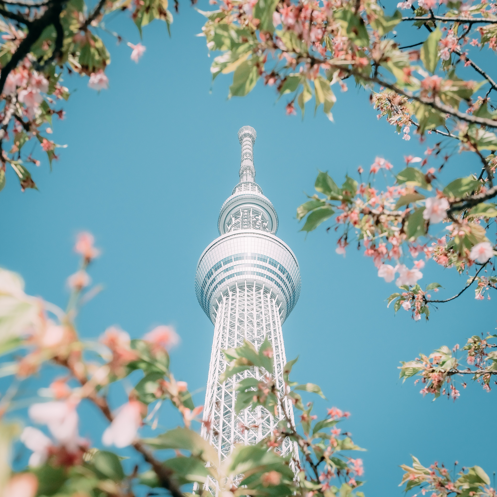

Introduction
Looking for a thrilling and unforgettable travel experience? Look no further than Tokyo, the vibrant capital city of Japan. Tokyo is a bustling metropolis that seamlessly blends traditional culture with modern technology, creating a truly unique atmosphere that you won't find anywhere else in the world. The world-class museums, vibrant nightlife, and delicious cuisine, making it an ideal destination for travelers of all ages and interests
From its iconic landmarks like the Tokyo Skytree and the historic Sensoji Temple, to its delicious cuisine and world-class shopping scene, Tokyo has something for everyone. Whether you're interested in exploring the city's rich cultural heritage or experiencing its cutting-edge technology and fashion, Tokyo has it all.
Why visit Tokyo?
Tokyo has a wide variety of interesting focal points to visit, there is something for all types of interest. Tech geeks will find Tokyo is the forefront of modern technology and innovation! Foodies are no strangers to how delicious sushi is, now picture trying it from its place of origin. For our explorers, Tokyo has a wide variety of exploration from its big cities to rural areas the countries rich cultural heritage is truly a sight to see.
Whether you are interested in history, culture, food, or simply want to experience the energy of a world-class city, Tokyo is a destination that should be on everyone's bucket list.